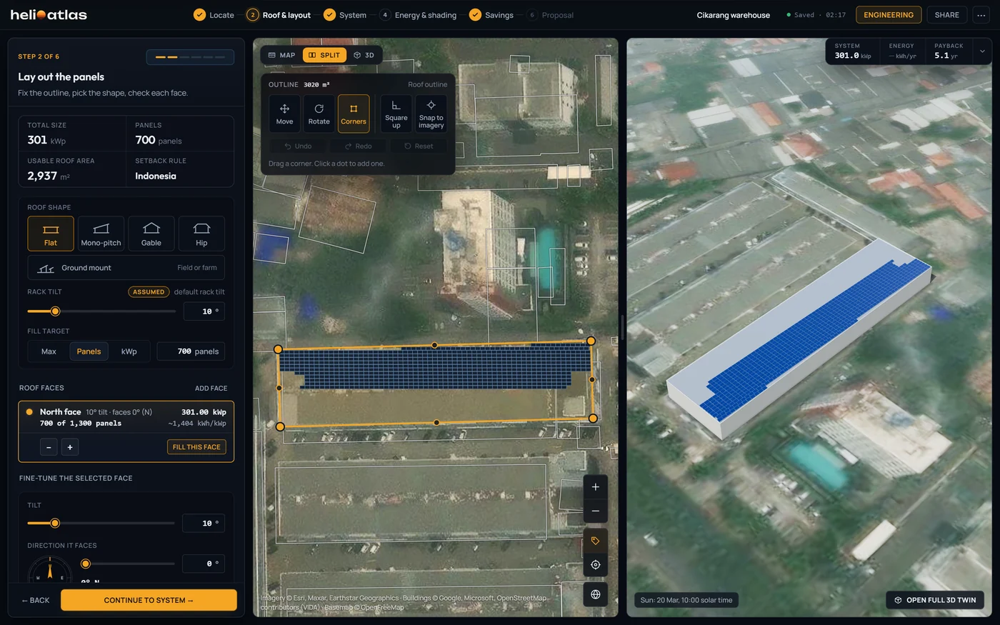
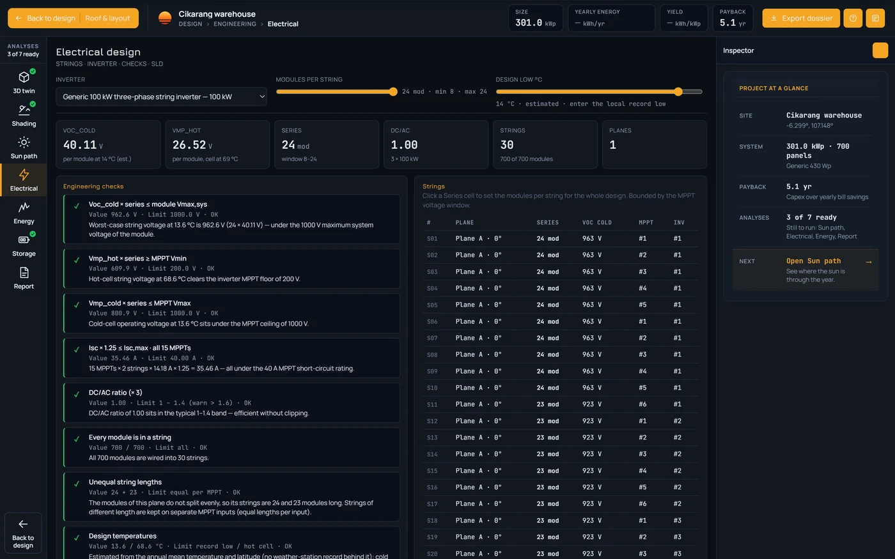
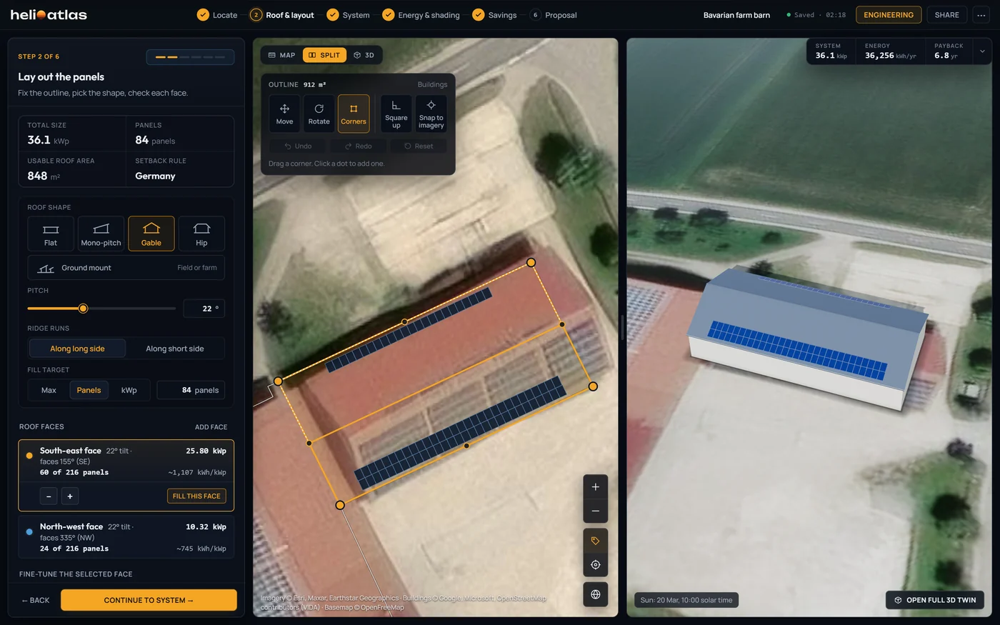
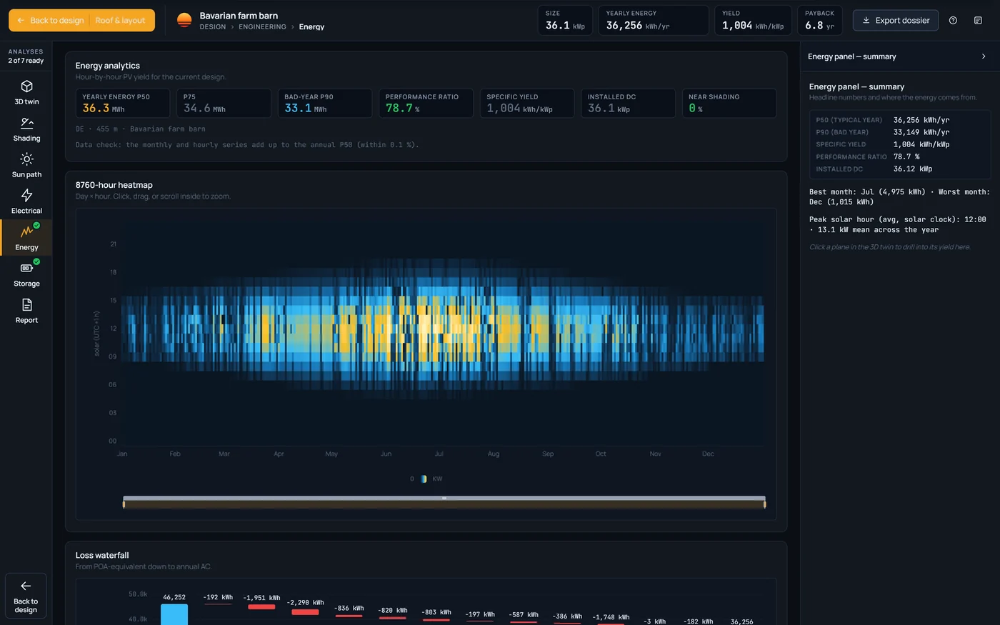
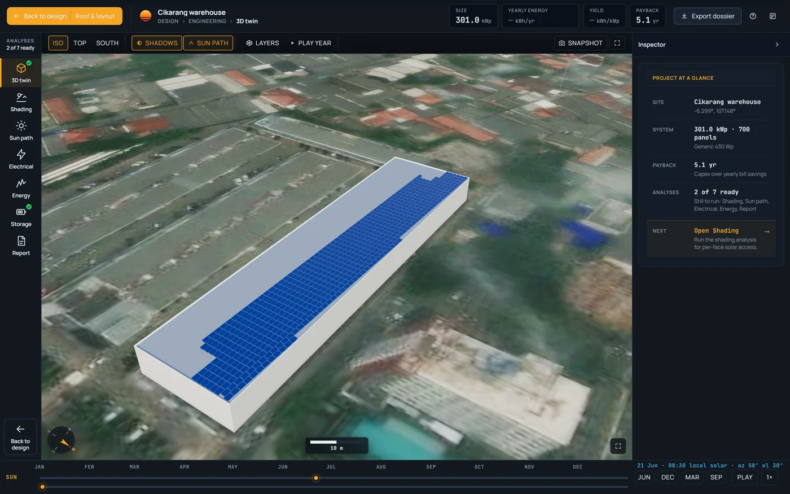

A roof, a warehouse or a farm. One studio.
The same six guided steps and engineering workbench design an 8.6 kWp house, a 301 kWp warehouse and a 36 kWp barn. What changes is the roof, the electrical design and the tariff you sell into.
Sell a home from its own roof faces.
A hip or gable roof is split into faces, each with its own yield. The customer sees the bill before and after in their currency, then signs a proposal on a link.
- System
- 8.6 kWp20 × 430 Wp
- Energy P50 · P90
- 14,004 · 12,954kWh/yr
- Bill before → after
- R 39,740 → R 17,088
- Payback · IRR
- 5.7 yr · 18.6 %
- 25-year net value
- R 216,062
The customer saves R 22,652 a year, 57 % of today's bill, on the South Africa preset tariff and a system price of R 15 per watt, both marked assumed and editable.
How a roof is designed, step by stepFix the outline in seconds.
Click a building to take its outline. Move, rotate, drag corners, square up or snap to imagery, nudge 0.1 m with the arrow keys, and undo up to 50 steps.
FillPanels fill inside the setbacks.
Best-facing face first. Target the maximum, a panel count or kWp, in portrait, landscape or Auto, which tries both. Every edit re-fills.
ProposalA proposal the customer signs.
Six A4 pages with your logo and colour, marked a design estimate, not a quotation, with a valid-until date. Signing runs on the online link.

A battery, sized by the hour.
Pick 5, 10 or 20 kWh, or a custom size. The workbench dispatches it hour by hour for self-consumption, and the Savings step runs the bill with and without it.
Size, and power with it
Power follows at kW = kWh ÷ 2, so 10 kWh is 5 kW. A capacity sweep marks the knee where extra kilowatt-hours stop paying back.
Assumptions, locked and shown
Round-trip efficiency 90 %, depth 90 % and a 50 % starting charge are labelled assumed and cannot be moved.
Four numbers for the customer
Autarky 63.3 %, self-consumption 66.0 %, 309 full cycles and 6,173 kWh a year through the battery.
A 301 kWp roof, checked string by string.
Flat roofs take racks at 10° to start, with row-to-row shading modelled. The workbench then sizes the strings, runs every electrical check and writes a 20-section engineering report.

Setbacks follow the country
Indonesia here, at an assumed 0.30 m. Eight rulesets apply per face, per project or per country.
Racks start at 10°
The default is marked assumed. Rack tilt is yours to change, like every face's tilt from 0 to 60°.
The roof fits more than you place
1,300 panels fit. The fill target is 700: 301 kWp at about 1,404 kWh/kWp.
Rack rows in 3-D
The stage draws the rows on satellite ground. Row-to-row shading is modelled for racks.

- Inverters
- 3 × 100 kWDC:AC 1.00
- Strings
- 30of 23 and 24 modules
- Isc × 1.25
- 35.46 Alimit 40, all 15 inputs
- Design low
- 14 °Cestimated
- Energy P50 · P90
- 422,661 · 370,615kWh/yr
- Bill before → after
- Rp 633.99 M → Rp 28.73 M
- Payback · IRR
- 5.1 yr · 20.3 %
Auto picks the smallest unit with DC:AC up to 1.4, or compare eight generic models, 3 kW single-phase to 100 kW three-phase, on units, DC:AC and clipping from the simulated year. Cables are sized to 1 % DC and 1.5 % AC drop over assumed runs of 30 m and 10 m.
How each check is computed
A barn is a roof like any other.
Each slope is a face with its own yield. On the example barn a 22° gable carries 60 panels on the south-east slope, facing 155°, and 24 on the north-west, facing 335°: 36.12 kWp in all.
- South-east face · 60 panels
- 1,107kWh/kWp
- North-west face · 24 panels
- 745kWh/kWp
- Energy P50 · P90
- 36,256 · 33,149kWh/yr
- Payback · IRR
- 6.8 yr · 14.9 %


The barn's bill falls from € 11,021 to € 3,935 a year on the Germany preset tariff, with a 25-year net value of € 32,928. The 3-D stage and the shading run assume a 6 m eave for a barn until you set it.
Fixed tilt or a tracker, row by row.
- Mounting
- fixed tilt · single-axis tracker
- Tracker angle
- 10–90°60° default · backtracking
- Table layouts
- 1P 2P 3P · 1L 2L 3L 4L
- Lowest module edge
- 0.2–4m
- Ground cover ratio
- 0.05–0.980.40 fixed · 0.33 tracker
Bifacial, with the ground underneath.
- Ground surfaces
- 7 presetsalbedo 0.12–0.60, or custom
- Bifacial rear side
- modelled10 % rear derate, assumed
- Boundary clearance
- 0–20m · 2 m default
- No-shade pitch hint
- 10:00–14:00winter solstice
- Standard ↔ bifacial
- keeps the layout
Flat-roof racks share the same row controls.
Six countries, ready to edit.
Pick a country and the studio loads a tariff, export terms, a roof pitch, a setback ruleset and prices. Every value is a placeholder marked assumed, and you can change any of them.
| Country | Currency | Energy rateper kWh | Export mode | Export creditper kWh | Default pitch | Setback ruleset | System priceper W | Battery priceper kWh |
|---|---|---|---|---|---|---|---|---|
| South Africa | ZAR | 2.65 | Net billing | 0.85 | 26° | South Africa0.30 m assumed | 15 | 12,000 |
| Germany | EUR | 0.32 | Net billing | 0.08 | 35° | Germany0.30 m assumed | 1.30 | 750 |
| Indonesia | IDR | 1,500 | Net metering | – | 15° | Indonesia0.30 m assumed | 10,000 | 11,000,000 |
| United States | USD | 0.15 | Net billing | 0.05 | 30° | US IFC 20210.91 m | 1.10 | 700 |
| United Kingdom | GBP | 0.28 | Net billing | 0.06 | 35° | UK / EU0.30 m assumed | 1.20 | 600 |
| Australia | AUD | 0.30 | Net billing | 0.05 | 22.5° | Australia0.30 m assumed | 1.40 | 1,100 |
Eight setback rulesets: two US fire-code sets at 0.91 m (US IFC 2021 and US California) and six regional sets at an assumed 0.30 m (generic, UK / EU, Australia, Germany, South Africa and Indonesia). Indonesia nets imports and exports each month, so it has no separate export credit.
System cost is kWp × price per watt, plus battery kWh × price per kWh. Elsewhere the pitch default is 15° for IN, ID, BR, PH, MY, TH and VN, 5° for AE and SA, and 25° everywhere else.
Start with the roof in front of you.
House, warehouse or barn: the same studio designs it, proves the yield and prices it in your market.
